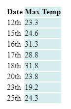

SAT1 project proposal due this week
Project Proposal - Software Development Unit 3 - SAT Checklist.pdf
Task 1a
An array stores values in a list that can be called by their index whereas a record is a type of associative array that stores entries in a key value pair that can call values with their key name
example.php
// Array
$fruits = array("apple", "banana", "cherry");
echo $fruits[1]; // Outputs: banana
// Record
$person = array("name" => "John", "age" => 30, "city" => "New York");
echo $person["age"]; // Outputs: 30Task 1b
draws.csv
Draw No,Date,Num 1,Num 2,Num 3,Num 4,Num 5,Supp Num
45,7 Mar 2020,22,33,23,4,14,7
46,14 Mar 2020,34,35,23,12,18,31
draws.xml
<?xml version="1.0" encoding="UTF-8"?>
<DoveLottoDraws>
<Draw>
<DrawNo>45</DrawNo>
<Date>7 Mar 2020</Date>
<Num1>22</Num1>
<Num2>33</Num2>
<Num3>23</Num3>
<Num4>4</Num4>
<Num5>14</Num5>
<SuppNum>7</SuppNum>
</Draw>
<Draw>
<DrawNo>46</DrawNo>
<Date>14 Mar 2020</Date>
<Num1>34</Num1>
<Num2>35</Num2>
<Num3>23</Num3>
<Num4>12</Num4>
<Num5>18</Num5>
<SuppNum>31</SuppNum>
</Draw>
</DoveLottoDraws>Task 2a
A while look checks the given condition at the start of the loop whereas the do while loop checks the condition at the end of the loop.
Task 2b
count.php
$i=0;
while($i<10){
$i++;
echo "$i\n";
}Task 2c
tempFilter.php
<?php
$temps = array(
["date"=>12,"maxTemp"=>23.3],
["date"=>13,"maxTemp"=>20.8],
["date"=>14,"maxTemp"=>20.8],
["date"=>15,"maxTemp"=>24.6],
["date"=>16,"maxTemp"=>31.3],
["date"=>17,"maxTemp"=>28.8],
["date"=>18,"maxTemp"=>31.8],
["date"=>19,"maxTemp"=>32.6],
["date"=>20,"maxTemp"=>23.8],
["date"=>21,"maxTemp"=>20.6],
["date"=>22,"maxTemp"=>21.8],
["date"=>23,"maxTemp"=>19.2],
["date"=>24,"maxTemp"=>20.2],
["date"=>25,"maxTemp"=>24.3],
);
echo "
<style>
td:nth-child(even), th:nth-child(even){
background-color: #D6EEEE;
}
</style>
<table>
<tr>
<th>Date</th>
<th>Max Temp</th>
</tr>";
for($i=0;$i<count($temps);$i++){
$j = $temps[$i];
$l = $j["maxTemp"];
if($l<20 || ($l<32 && $l>22)){
echo "<tr>
<td>{$j["date"]}th</td>
<td>$l</td>
</tr>";
};
};
echo "</table>";Result: 